Volti di casa nostra
Chi passa a trovarci
A Piazza di San Cosimato la porta è sempre aperta e chi si siede ai nostri tavoli diventa subito di famiglia. Tra un piatto della tradizione e un bicchiere di vino, prima di salutarci ci piace scattare una foto insieme per ricordo.
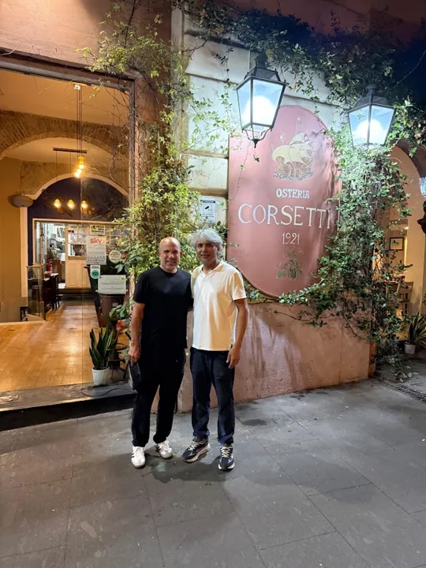

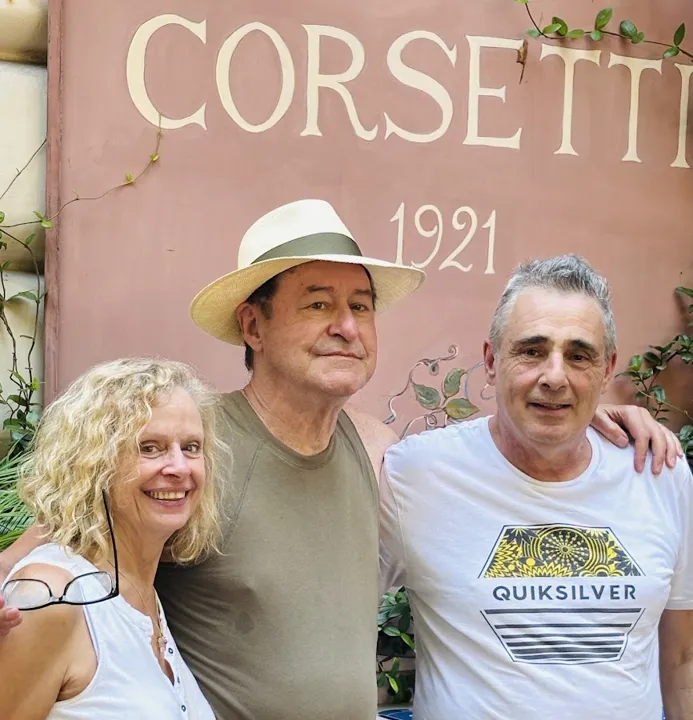


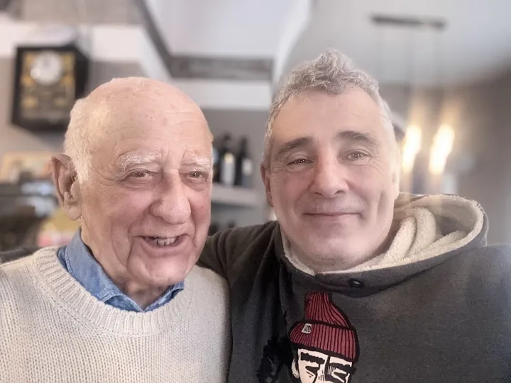
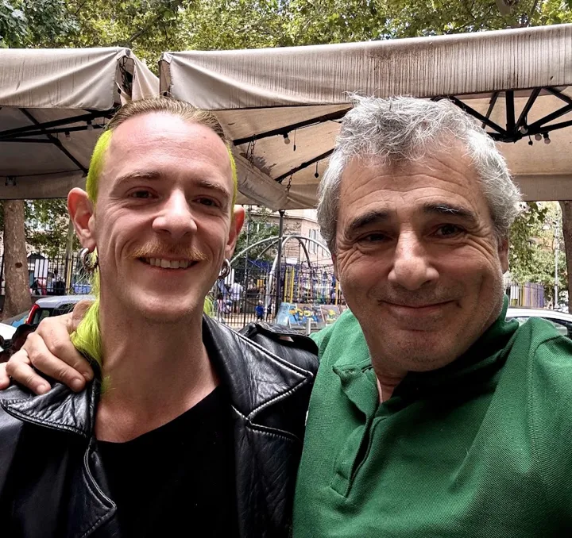
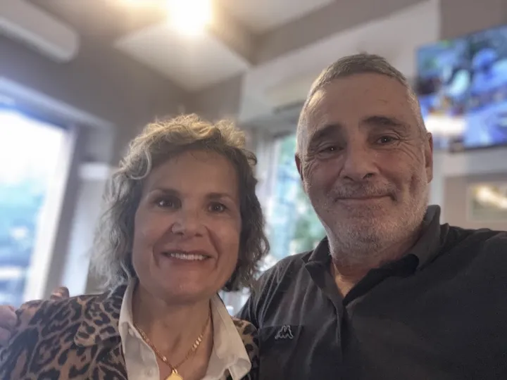

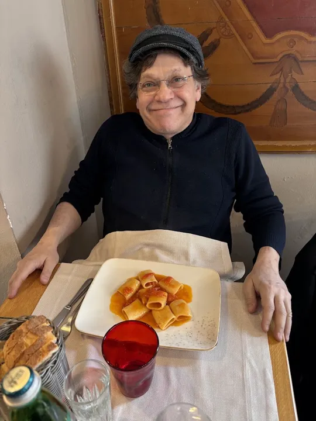
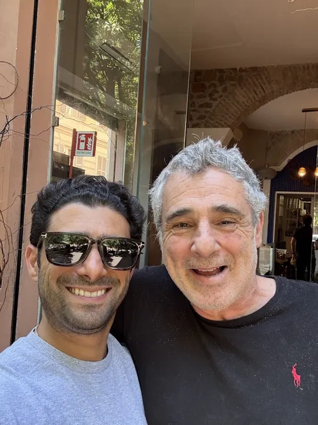
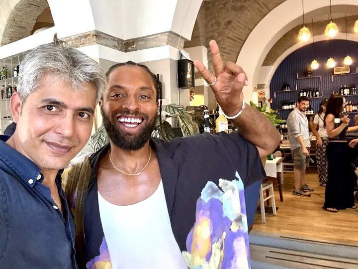
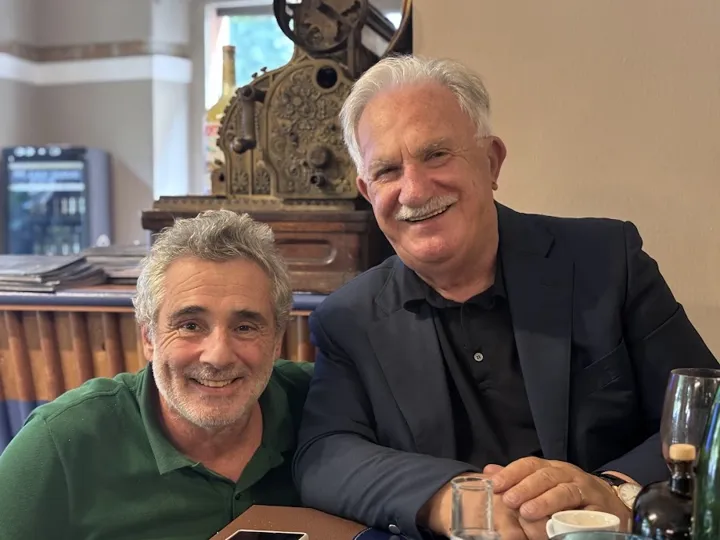
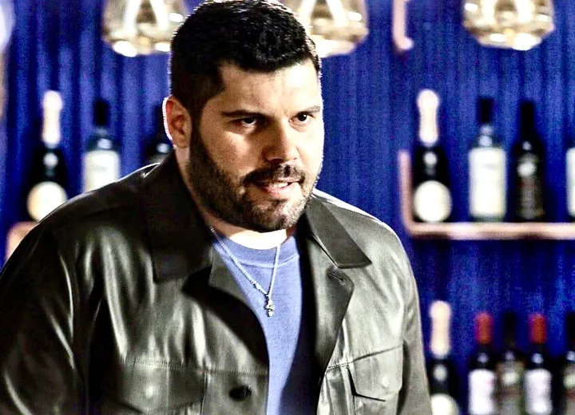
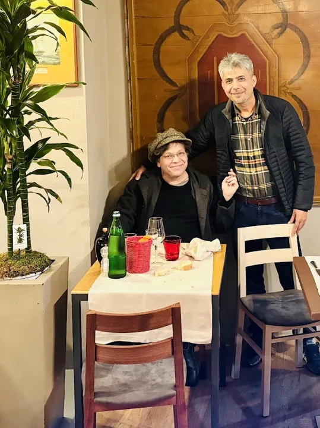


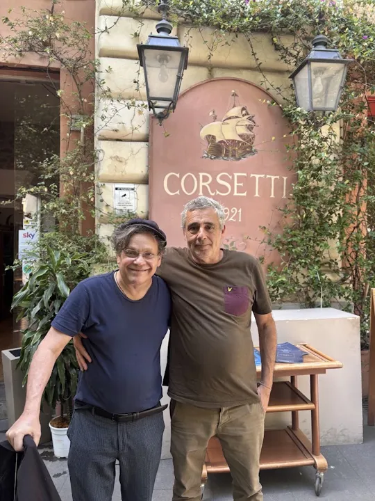
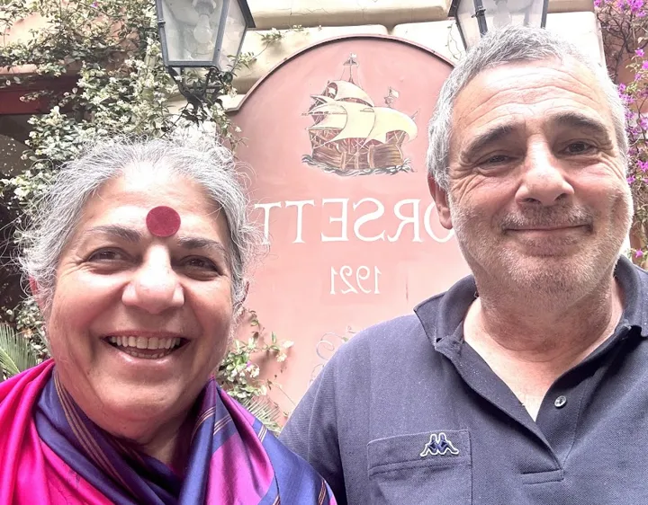
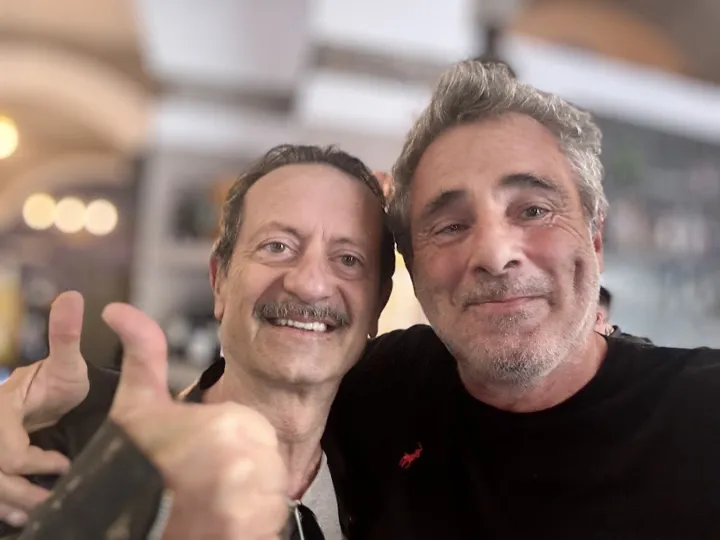
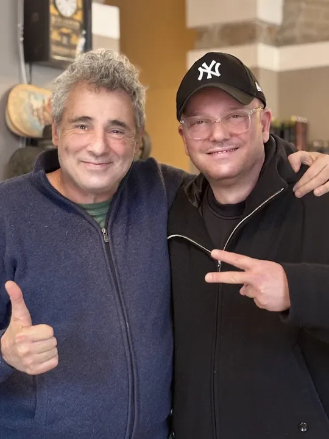
Passate a trovarci a Trastevere, la prossima foto davanti all'insegna la facciamo con voi.
Prenotate un tavolo